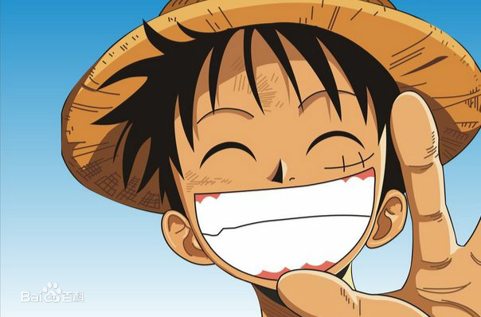

蒙奇·D·路飞，日本漫画《航海王》及其衍生作品中的男主角。外号“草帽”路飞，是草帽一伙、草帽大船团船长，极恶的世代之一。橡胶果实能力者，悬赏金15亿贝里。梦想是找到传说中的One Piece，成为海贼王。
路飞性格积极乐观，爱憎分明，宁死不屈，十分重视伙伴与朋友，对任何危险的事物都超感兴趣。和其他传统的海贼所不同的是，他并不会为了追求财富而杀戮，而是享受着身为海贼的冒险和自由。
| 中文名 | 蒙奇·D·路飞 | 虚拟人物血型 | F型 |
| 外文名 |
モンキー・D・ルフィ Monkey D. Luffy |
身高 | 172cm->174cm |
| 别名 |
草帽小子 第五位海上皇帝 |
恶魔果实 | 橡胶果实 |
尾田荣一郎根据日本漫画《龙珠》而构思出来路飞这一角色。尾田在连载《航海王》之前，还推出过短篇海贼漫画《冒险的黎明》，该漫画的主角也叫路飞，是《航海王》中路飞的雏形。
作者尾田荣一郎在《航海王》连载10周年的纪念情报志《ONE PARA》中表示，路飞（Luffy）这名字源自英语“Luff”，意即“逆风航行”，这是他想过最适合船长使用的名字。此外，他也指出路飞生下来就是运势非凡的人；只有实力和运气兼备的人，才能成就伟大功业 [15] 。
路飞的姓氏蒙奇（Monkey），和英文里的“猴子”相同。而路飞的代表动物也是猴子。
路飞的故乡是东海的哥亚王国所在的“黎明岛”的边陲地带风车村。从小，身为海军中将的爷爷蒙奇·D·卡普便用斯巴达式的训练方式锻炼路飞，希望他以后能够成为海军。
偶然间海贼香克斯在风车村和路飞相遇，两人成为了忘年之交。为了表现自己成为海贼的决心，路飞将自己的左脸用刀划出了一道伤疤。在香克斯停留期间，路飞对被山贼西格侮辱却毫不还手的香克斯感到气愤，于是乱拿东西吃，结果误食了橡胶果实。为了替香克斯出气，路飞独自找山贼报仇却被抓住抛入海中。在即将被海兽吞食之际，成为旱鸭子的路飞被香克斯用一条左臂的代价救起。
在香克斯要离开时，路飞决定不跟香克斯出海了，要依靠自己的实力成为海贼，路飞对香克斯宣誓：“总有一天，我能召集到比你们更强的伙伴！然后找到世界上最大的宝藏！我会成为海贼王的。”为此，香克斯要路飞保管自己最珍爱的草帽，并与他约定“等到你成为一个出色海贼时，再将草帽还给我”。
爷爷卡普知道了路飞的海贼志向后，将他交由卡利·达旦照顾。于是路飞与早被寄养在这里的艾斯相遇，路飞为能够和艾斯成为朋友而努力。经过伯尔杰米事件后，艾斯和萨博终于接受了路飞，三人成为结义兄弟。在此期间三人互相对战来提高自己的能力，为以后出海成为海贼做准备。但路飞从未战胜过艾斯和萨博。
后来发生天龙人炮轰萨博船只事件，大家都以为萨博去世，路飞非常悲痛，告诉艾斯自己想要变强的愿望，并请求艾斯不要死。于是艾斯和路飞约定不会死，并且两人要在17岁出海。
15岁时，路飞送行出航的艾斯，继续锻炼自己。17岁时，路飞出航，出航前，路飞一击打败了曾经咬断香克斯手臂的海兽，并计划“首先要找齐十个伙伴”，自信地说自己会赶上艾斯。